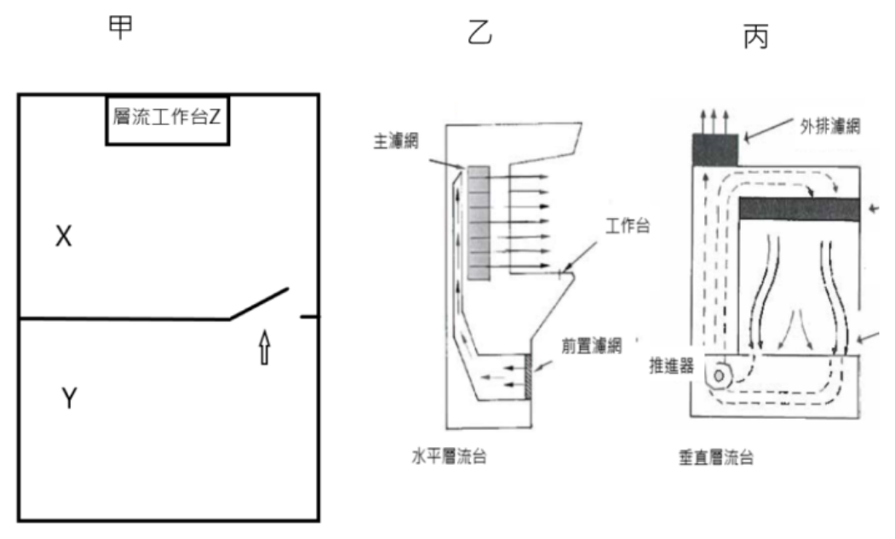

109 年第 2 次藥師調劑學與臨床藥學試題與答案
這一頁是民國 109 年第 2 次藥師調劑學與臨床藥學的整份歷屆試題，共 80 題，題目與標準答案出自考選部「國家考試試題及測驗式試題答案」開放資料。以下逐題列出題幹、選項與答案；要計時作答或記錄成績，請用線上練習。
考選部原始場次代碼：109100
線上作答這一科 →
全部 80 題
第 1 題
下列何者可做為液體劑型之螯合劑（chelating agent）？
- （A）disodium edetate
- （B）butylated hydroxytoluene
- （C）sodium bisulfite
- （D）propionic acid
答案：（A）
第 2 題
有關benzalkonium chloride之敘述，下列何者錯誤？
- （A）可做為眼藥水之防腐劑
- （B）對革蘭氏陰性菌無效
- （C）Mg2+和Ca2+會降低其殺菌作用
- （D）與fluorescein和nitrates存在配伍禁忌
答案：（B）
第 3 題
將tetracycline溶於pH＞3之溶液中時，最可能產生下列何種incompatibility，使tetracycline之抗菌活性降低？
- （A）decarboxylation
- （B）epimerization
- （C）hydrolysis
- （D）racemization
答案：（B）
第 4 題
領藥時，下列何者不須領受人憑身分證明簽名領受？
- （A）morphine
- （B）fentanyl
- （C）alprazolam
- （D）flunitrazepam
答案：（C）
第 5 題待校
下列處方之常用縮寫中，何者代表each eye？
- （A）o.u.
- （B）o.d.
- （C）o.s.
- （D）oz
答案：（A）
第 6 題
若以英文教導外國人藥品之使用方法，下列何種用藥指示最適當？
- （A）one twice daily to be taken
- （B）5 mg per tablet two times daily to be taken
- （C）take 5 mg two times daily
- （D）take one tablet twice daily
答案：（D）
第 7 題
有關藥品玻璃包材之敘述，下列何者最不適當？
- （A）包材的重量造成運輸成本增加
- （B）避空氣及避濕之效果佳
- （C）不易檢查其內容物
- （D）價格較昂貴
答案：（C）
第 8 題
下列何者屬於secondary packaging？
- （A）light-resistant containers
- （B）child-resistant containers
- （C）tropicalized packs
- （D）patient information leaflet
答案：（D）
第 9 題
藥師臨場調製diazepam capsule，原錠劑之有效期限尚有1年；依據USP規定，此capsule在適當保存條件下之最 長使用期限為多久？
- （A）1年
- （B）9個月
- （C）6個月
- （D）14天
答案：（C）
第 10 題
根據ISMP定義chemotherapeutic agents須以「高警訊藥品」方式管理，醫療機構在制定管理規範時，下列做法 何者最不適當？
- （A）應與一般性藥品分開儲放
- （B）運送時須全程配置「危害物質潑灑處理」設備（spill kit）
- （C）藥師調製時須穿戴個人防護設施，如護目鏡、口罩、手套、防護衣等
- （D）具細胞毒性，應由男性藥師負責處理
答案：（D）
第 11 題
王女士50公斤，使用0.05 g/min的norepinephrine升壓，與建議劑量0.05～0.5 μg/kg/min相比，是否適當？
- （A）劑量適當
- （B）劑量過高
- （C）劑量過低
- （D）無法判斷
答案：（B）
第 12 題
醫師處方insulin glargine 40 units HS，共28天；目前藥局之品項為300 units/mL之1.5 mL包裝，應調劑幾支？
- （A）1
- （B）2
- （C）3
- （D）4
答案：（C）
第 13 題
下列何種吸入給藥器絕對不可用水清洗？
- （A）large volume spacer
- （B）Turbuhaler®
- （C）Ventolin®
- （D）metered dose inhaler
答案：（B）
第 14 題
下列何者可減少全靜脈營養（TPN）鈣磷沉澱的發生？
- （A）slow infusion
- （B）增加溫度
- （C）使用calcium chloride
- （D）先加磷，接著加其他成分，最後再加鈣
答案：（D）
第 15 題
下列何者為常見靜脈營養治療之代謝性併發症（metabolic complications）？
- （A）高血鉀
- （B）高血鎂
- （C）低血磷
- （D）低血糖
答案：（C）
第 16 題
沒有心臟衰竭、腎臟衰竭、燒燙傷、腸胃道液體流失的成年病人，一般全靜脈營養（TPN）液體的維持量須 多少mL/kg/day？
- （A）20～25
- （B）30～35
- （C）40～45
- （D）50～55
答案：（B）
第 17 題
下列注射劑，何者最易與heparin flush產生配伍禁忌，沖洗導管時應注意？
- （A）amiodarone
- （B）epinephrine
- （C）lidocaine
- （D）ondansetron
答案：（A）
第 18 題
玻璃容器在下列那種pH值範圍，最容易發生alkaline earth leaching？
- （A）10～11
- （B）8～9
- （C）6～7
- （D）4～5
答案：（A）
第 19 題
有關dexrazoxane之敘述，下列何者正確？
- （A）為cisplatin外滲時的antidote
- （B）銅離子的chelator
- （C）須在外滲發生6小時內給與
- （D）IV給與，1天1次連續給與7天
答案：（C）
第 20 題
有關危害性藥品調製的個人防護裝備（personal protective equipment, PPE），下列敘述何者正確？
- （A）須配戴N95口罩以保護操作人員
- （B）使用開口在後方的拋棄式隔離衣
- （C）化療手套若未污染，可半天再換
- （D）藥品若尚未拆除外盒，則不須配戴手套
答案：（B）
第 21 題
下列抗癌危害性藥品的外滲（extravasation），何者應以熱敷處理？
- （A）doxorubicin
- （B）mitomycin-C
- （C）paclitaxel
- （D）vincristine
答案：（D）
第 22 題
如圖甲為清淨室配置，乙、丙為兩種不同的層流操作台。關於調製危害性藥品的設備，下列何者較佳？

- （A）氣壓X＞Y，調劑台乙
- （B）氣壓X＞Y，調劑台丙
- （C）氣壓X＜Y，調劑台乙
- （D）氣壓X＜Y，調劑台丙
答案：（D）
第 23 題
依據USP，調製之無菌製劑，微生物污染風險為low risk level，放置於冰箱冷藏之beyond-use dates為多少天？
- （A）7
- （B）14
- （C）9
- （D）3
答案：（B）
第 24 題
術後自控式止痛（PCA）處方：morphine（1 mg/mL, 100 mg/bag for PCA）1 mg IV if pain（4 hr max 20 mg），下列敘述何者正確？
- （A）可用於術後插管，以midazolam鎮靜且意識不清的病人
- （B）需要加上1個continuous infusion的劑量
- （C）需要1個lockout time，病人按壓後在lockout time內不再給藥
- （D）如果1天使用超過3次，應加一片fentanyl transdermal patch 25 μg/hr
答案：（C）
第 25 題
下列敘述何者正確？
- （A）regular insulin可加在靜脈營養輸液中，惟insulin可能被塑膠容器與管路吸附
- （B）lactated Ringer's solution中含有Ca2+、HCO3﹣
- （C）regular insulin合併使用dextrose injection可治療hypokalemia
- （D）calcium gluconate可治療hypokalemia造成的心律不整
答案：（A）
第 26 題
藥品的有效期限（expiration date, ED）與調劑後使用期限（beyond-use date, BUD）之比較，下列何者正確？
- （A）有BUD的藥品在調製後，原包裝未被破壞
- （B）BUD通常比ED長
- （C）ED須有科學數據支持
- （D）製造廠商會確保每一個產品都有BUD
答案：（C）
第 27 題
下列何者一定含有防腐劑？
- （A）5 mL, 0.9% NaCl prefilled syringe
- （B）5 mL, 5% dextrose ampoule
- （C）200 mL, lactated Ringer's injection
- （D）20 mL, bacteriostatic water for injection vial
答案：（D）
第 28 題
病人致電社區藥局表示昨天領取的慢箋藥品有一袋跟上次不同，藥師查證後，發現是amlodipine 1 tab QD錯拿 為amiodarone 1 tab QD。下列處理順序，何者最適當？①檢視標準作業流程（SOP）避免再發生 ②確認病人 是否服過藥 ③評估服藥的傷害情況，給與適當的建議 ④道歉與更換藥品
- （A）①②③④
- （B）①②④③
- （C）②③①④
- （D）②③④①
答案：（D）
第 29 題
有關藥事委員會之敘述，下列何者正確？①評估藥品進用與否 ②定期評估藥品相關問題 ③核定用藥指 引、監督用藥疏失及藥品不良反應之監測 ④提供療劑監測、藥品諮詢等臨床藥事服務
- （A）①②③
- （B）①②④
- （C）①③④
- （D）②③④
答案：（A）
第 30 題
有關5 mg zoledronic acid在postmenopausal osteoporosis之治療，下列何者正確？
- （A）IV yearly for treatment
- （B）IM yearly for prevention
- （C）IV every other year for treatment
- （D）IM every other year for prevention
答案：（A）
第 31 題
下列何項措施在預防兒童用藥疏失時效果最不理想？
- （A）注射針劑與口服溶液使用標準濃度
- （B）由智慧型輸注幫浦（smart pump）給藥
- （C）一旦發生用藥疏失立即嚴懲相關醫療人員
- （D）電腦開方系統輔以臨床決策支援系統
答案：（C）
第 32 題
關於用藥疏失之敘述，下列何者錯誤？
- （A）應鼓勵通報
- （B）根本原因分析（root cause analysis）是前瞻性預防錯誤的方法
- （C）應避免將錯誤歸因於個人，應檢討系統性的問題
- （D）失效模式與效應分析（failure mode and effects analysis）是積極主動、前瞻性預防錯誤的方法
答案：（B）
第 33 題
下列何者是使用linezolid最須注意的不良反應？
- （A）tendonitis
- （B）QT interval elongation
- （C）optic neuropathy
- （D）thrombocytosis
答案：（C）
第 34 題
有關type A藥品不良反應之敘述，下列何者錯誤？
- （A）致死率較高
- （B）發生率較高
- （C）具可預期性
- （D）與劑量相關
答案：（A）
第 35 題
有關藥物經濟學分析方法，下列何者錯誤？
- （A）cost-minimization analysis
- （B）cost-benefit analysis
- （C）cost-effectiveness analysis
- （D）cost-utilization analysis
答案：（D）
第 36 題
口服非處方止痛藥中，常添加下列何種成分來加強acetaminophen或aspirin的止痛效果？
- （A）caffeine
- （B）pseudoephedrine
- （C）acetylcysteine
- （D）glucosamine
答案：（A）
第 37 題
醫院於護理給藥系統中自動提醒護理人員，於給藥後主動監測病人之不良反應，此做法是針對「藥品使用與 管理」流程中何項步驟之防誤措施？
- （A）prescribing
- （B）administering
- （C）monitoring
- （D）storage
答案：（C）
第 38 題
有關acetaminophen引起的肝損傷（drug-induced liver injury, DILI），下列敘述何者正確？
- （A）與CYP3A4的抑制有關
- （B）通常為不可預防的特異體質反應
- （C）通常與劑量無關
- （D）以口服或靜脈注射acetylcysteine治療
答案：（D）
第 39 題
有關drug eruptions之敘述，下列何者正確？
- （A）僅與病毒感染相關
- （B）acneiform eruption 僅發生於臉部
- （C）常見引起Stevens-Johnson syndrome的藥品包括sulfonamides類藥品
- （D）Stevens-Johnson syndrome的病程通常介於4至8個月
答案：（C）
第 40 題
下列那些注射方式可能延緩新生兒之藥品吸收？①IV ②IM ③SC ④IT
- （A）①②
- （B）①④
- （C）②③
- （D）②④
答案：（C）
第 41 題
有關嬰幼兒常用名詞之定義，下列何者錯誤？
- （A）neonate－a full-term newborn 0 to 28 days
- （B）preterm－＜37 weeks' gestational age at birth
- （C）very low birth weight－birth weight＜1.5 kg
- （D）post-term≧40 weeks' gestational age at birth
答案：（D）
第 42 題
3歲20 kg男孩，診斷感染influenza A，須給與藥物治療時，下列處方何者最適當？
- （A）zanamivir 2 inhalations QD for 5 days
- （B）zanamivir 1 inhalation QD for 10 days
- （C）oseltamivir 45 mg BID PO for 5 days
- （D）oseltamivir 45 mg QD PO for 10 days
答案：（C）
第 43 題
有關老年人生理變化對藥效學的影響，下列敘述何者錯誤？
- （A）postural hypotension的機會增加
- （B）blood brain barrier的功能減退，有中樞作用的anticholinergics，容易造成意識混亂
- （C）monoamine oxidase活性減退，腦中dopamine濃度增加
- （D）對dopamine receptor blocker的敏感性增加
答案：（C）
第 44 題
下列何者最適合用來治療老年人的憂鬱症？
- （A）imipramine
- （B）amitriptyline
- （C）phenelzine
- （D）escitalopram
答案：（D）
第 45 題
下列何者最不受腎臟功能下降影響？
- （A）apixaban
- （B）dabigatran
- （C）rivaroxaban
- （D）warfarin
答案：（D）
第 46 題
下列何種情況，藥師交付藥品時，特別須對病人提供用藥指導？①藥品外盒有警語標示 ②可能有藥品交互 作用的問題 ③narrow therapeutic index的品項 ④有特殊用法
- （A）僅①②
- （B）僅②③④
- （C）僅①③④
- （D）①②③④
答案：（D）
第 47 題
藥師進行藥品諮詢時，下列何者不是開放式問句？
- （A）請問你那裡痛
- （B）請形容你疼痛的感覺
- （C）你有那些症狀
- （D）你是否有藥物過敏
答案：（D）
第 48 題
下列何者須每日皮下注射兩次？
- （A）exenatide（Byetta®）
- （B）liraglutide（Victoza®）
- （C）dulaglutide（Trulicity®）
- （D）albiglutide（Tanzeum®）
答案：（A）
第 49 題
為避免哺乳期間，母親用藥對嬰兒產生影響，下列敘述何者錯誤？
- （A）須考量影響藥品分布至乳汁的藥動學
- （B）須考量母親之藥品劑量、給藥途徑、療程、代謝及腎臟清除率等
- （C）分子量小的藥品較容易分泌至乳汁中
- （D）應優先選擇相對嬰兒劑量（relative infant dose, RID）＞10%的藥品
答案：（D）
第 50 題
孫女士因HIV感染已持續治療1年8個月，用藥包括zidovudine（AZT）、lamivudine與atazanavir/ritonavir。目前 已懷孕7週，應如何調整用藥？
- （A）加入stavudine
- （B）加入didanosine
- （C）加入dolutegravir
- （D）維持原有治療直到剖腹生產
答案：（D）
第 51 題
下列何者最適合用於治療孕婦的慢性高血壓？
- （A）atenolol
- （B）irbesartan
- （C）labetalol
- （D）lisinopril
答案：（C）
第 52 題
下列何者不屬於二級文獻？
- （A）PubMed
- （B）International Pharmaceutical Abstracts（IPA）
- （C）TOXNET
- （D）Martindale : The Complete Drug Reference
答案：（D）
第 53 題
下列藥品會干擾放射性藥品123I而影響其成像結果，何者應於檢查前停藥7～10天？
- （A）tramadol
- （B）amlodipine
- （C）salmeterol
- （D）olanzapine
答案：（D）
第 54 題
下列何者可能降低口服避孕藥的效果？
- （A）lorazepam
- （B）prednisolone
- （C）phenytoin
- （D）warfarin
答案：（C）
第 55 題
下列何者不是交付amiodarone時，應提醒病人注意的副作用？
- （A）pulmonary fibrosis
- （B）hyperthyroidism
- （C）hypothyroidism
- （D）asthma
答案：（D）
第 56 題
下列何者最可能增加病人的血糖值及尿酸值？
- （A）colestipol
- （B）ezetimibe
- （C）nicotinic acid
- （D）simvastatin
答案：（C）
第 57 題
70歲女性，155 cm，65 kg，serum creatinine 8.6 mg/dL。醫師處方：valacyclovir 1000 mg PO TID，診斷： Herpes zoster。下列處置何者最適當？
- （A）調整劑量至500 mg PO TID；不受透析影響
- （B）調整劑量至1000 mg PO BID；確認是否透析並依透析模式調整用藥時間
- （C）調整劑量至500 mg PO QD；確認是否透析並依透析模式調整用藥時間
- （D）valacyclovir為肝代謝藥品，不須調整劑量
答案：（C）
第 58 題
下列那一藥品必須計算病人總累積劑量的問題？
- （A）cyclophosphamide
- （B）idarubicin
- （C）cisplatin
- （D）bendamustin
答案：（B）
第 59 題
醫師處方verapamil SR 240 mg TID治療高血壓，此處方有何疑義？
- （A）verapamil不能治療高血壓
- （B）total daily dose過高
- （C）每次dose偏低
- （D）應Q8H給藥
答案：（B）
第 60 題
下列何者最適合用於治療candiduria？
- （A）anidulafungin
- （B）fluconazole
- （C）posaconazole
- （D）voriconazole
答案：（B）
第 61 題
李小姐住院1週後發生肺炎，下列何種抗生素最不適合？
- （A）ciprofloxacin
- （B）ceftazidime
- （C）ertapenem
- （D）piperacillin/tazobactam
答案：（C）
第 62 題
王先生平時以valproic acid控制癲癇，因嚴重感染住院，下列建議何者正確？
- （A）meropenem會使valproic acid血中濃度下降，影響seizure control
- （B）meropenem會使valproic acid濃度增加，導致副作用產生
- （C）不可使用meropenem，但可使用imipenem
- （D）不可使用meropenem，但可使用ertapenem
答案：（A）
第 63 題
Methicillin-resistant Staph. aureus（MRSA）造成的院內感染型肺炎，以vancomycin治療達穩定血中濃度，其血 中谷濃度之範圍何者較適當？
- （A）＜5 µg/dL
- （B）5～10 mg/L
- （C）10～15 mg/L
- （D）15～20 µg/mL
答案：（D）
第 64 題
18歲男性，osteosarcoma手術後接受high dose methotrexate。Methotrexate 20 g（12 g/m2）in NS 500 mL IV infusion 4 hrs，leucovorin 15 mg IV Q6H beginning at hour 24。Methotrexate血中濃度於第4、48及72小時，分別 為1,300、4.5及1.2 µM；目前腎功能未發生明顯變化。下列敘述何者正確？
- （A）methotrexate排除延遲，應增加leucovorin劑量以減輕毒性
- （B）methotrexate排除延遲，應增加leucovorin劑量以促進methotrexate排除
- （C）methotrexate排除正常，保持leucovorin原劑量至methotrexate濃度＜0.1 µM
- （D）methotrexate排除正常，可停用leucovorin
答案：（A）
第 65 題
下列何種情況，進行藥品血中濃度監測最有意義？
- （A）療效或ADR與血中藥品濃度密切相關，且therapeutic range大
- （B）療效或ADR與血中藥品濃度密切相關，且therapeutic range小
- （C）therapeutic range小，但療效或ADR與血中濃度未直接相關
- （D）therapeutic range大，且個體之間藥品血中濃度差異大
答案：（B）
第 66 題
在tacrolimus-based immunosuppression，一般標的tacrolimus血中trough concentration為多少μg/L？
- （A）0.5～1.2
- （B）5～12
- （C）50～120
- （D）0.05～0.12
答案：（B）
第 67 題
下列何者與葡萄柚汁併服時，發生交互作用之可能性最小？
- （A）citalopram
- （B）cyclosporine
- （C）nifedipine
- （D）verapamil
答案：（A）
第 68 題
洪女士79歲，身高148 cm，體重75 kg。患有糖尿病、高血壓、高血脂，使用五種治療藥品；另因失眠使用 lorazepam。下列何者不是她發生藥品交互作用的危險因子？
- （A）多種慢性病與用藥
- （B）肥胖
- （C）高齡女性
- （D）身高
答案：（D）
第 69 題
下列何者不會透過抑制P-glycoprotein而增加digoxin之血中濃度？
- （A）atorvastatin
- （B）diltiazem
- （C）clarithromycin
- （D）St. John’s wort
答案：（D）
第 70 題
有關tacrolimus之藥品交互作用，下列敘述何者正確？
- （A）與itraconazole併用，tacrolimus的血中濃度會下降
- （B）與cimetidine併用，tacrolimus的血中濃度會下降
- （C）與St. John’s wort併用，tacrolimus的血中濃度會下降
- （D）與rifampin併用，tacrolimus的血中濃度會上升
答案：（C）
第 71 題
下列敘述何者錯誤？
- （A）dabigatran與rifampin應避免併用
- （B）rivaroxaban與rifampin應避免併用
- （C）apixaban與rifampin併用時，降低apixaban劑量即可
- （D）edoxaban與rifampin應避免併用
答案：（C）
第 72 題
下列何組藥品交互作用的機制，不屬於藥動學交互作用？
- （A）theophylline－amiodarone
- （B）alcohol－disulfiram
- （C）allopurinol－mercaptopurine
- （D）digoxin－hydrochlorothiazide
答案：（D）
第 73 題
下列何者與carbamazepine併服時，不會增強carbamazepine的藥效？
- （A）pioglitazone
- （B）cimetidine
- （C）diltiazem
- （D）verapamil
答案：（A）
第 74 題
有關phenytoin之敘述，下列何者錯誤？
- （A）albumin的濃度降低，會導致total phenytoin的血中濃度上升
- （B）phenytoin為弱酸性藥品，主要的結合蛋白為albumin
- （C）腎功能正常的病人，phenytoin與albumin結合率約為90%
- （D）尿毒症的病人，游離態的phenytoin為20～25%
答案：（A）
第 75 題
下列那種藥品交互作用，可藉由錯開服藥時間至少1小時而避免？
- （A）ketoconazole + lansoprazole
- （B）bisacodyl + magnesium oxide
- （C）lovastatin + grapefruit juice
- （D）warfarin + tetracycline
答案：（B）
第 76 題
下列各項併用藥品與其相關副作用的配對中，何者最不可能發生？
- （A）lisinopril＋trichlormethiazide：導致hypotension
- （B）verapamil＋digoxin：增加AV-block風險
- （C）theophylline＋linezolid：增加theophylline毒性
- （D）warfarin＋cimetidine：增加embolism風險
答案：（D）
第 77 題
有關20% azelaic acid乳膏之含量，下列敘述何者正確？
- （A）每g乳膏含20 mg azelaic acid
- （B）每mg乳膏含0.02 mg azelaic acid
- （C）每100 mg乳膏含2 mg azelaic acid
- （D）每g乳膏含200 mg azelaic acid
答案：（D）
第 78 題
承上題，該藥主成分與軟膏之重量比例為多少？
- （A）2：10
- （B）2：100
- （C）2：1000
- （D）2：10000
答案：（A）
第 79 題
為提升all-in-one全靜脈營養輸液（TPN）之安定性，下列何者正確？
- （A）使用PVC（polyvinyl chloride）軟袋
- （B）使用多層EVA（ethylvinyl acetate）軟袋
- （C）室溫貯存
- （D）添加防腐劑
答案：（B）
第 80 題
承上題，其原因為何？
- （A）PVC可阻止氧氣之穿透
- （B）EVA不含塑化劑，可避免脂肪將塑化劑溶出（leaching）
- （C）室溫貯存可避免沉澱之析出
- （D）防腐劑可防止微生物孳生
答案：（B）
其他年度
回到藥師調劑學與臨床藥學的年度總覽，
或到藥師題庫首頁看其他科目。
題目與標準答案出自考選部「國家考試試題及測驗式試題答案」開放資料。依中華民國《著作權法》第 9 條第 1 項第 5 款，
依法令舉行之各類考試試題不得為著作權之標的，得自由利用。詳解為 AI 整理的學習輔助，
並非官方標準答案；中華民國法規會修訂，引用前請對照現行版本查證。